本文章將介紹使用指令 tmux 終端機管理工具，分割視窗、同時開啟多個終端機
安裝 tmux
ubuntu 16.04 預設有安裝，如果使用此版本可以跳過安裝
1 | sudo apt-get install -y tmux |
下指令進入 tmux 環境
1 | tmux |
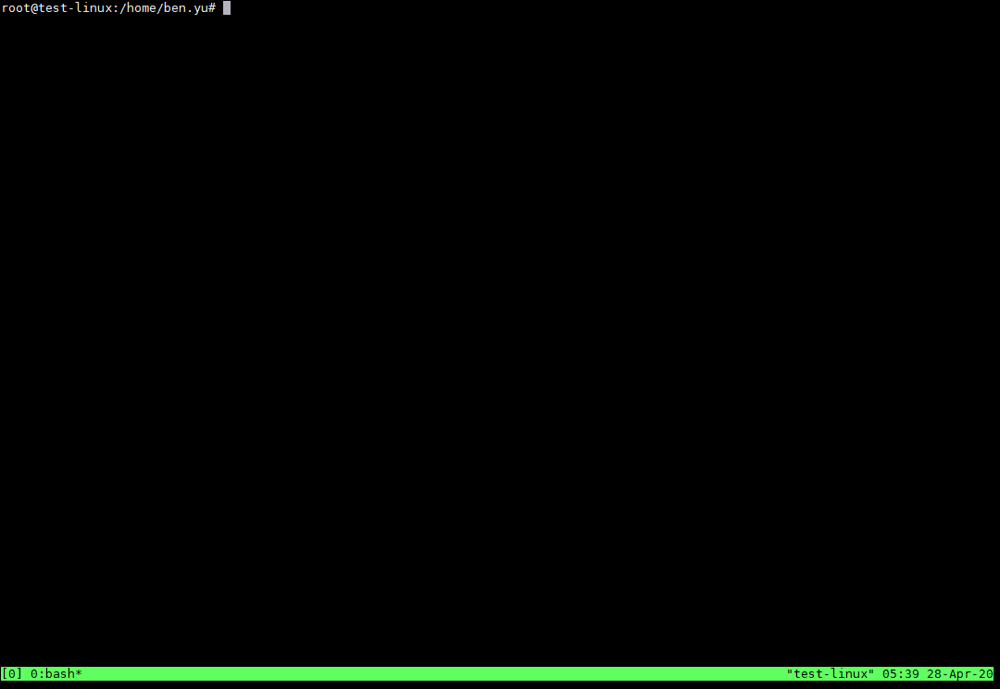
基本介紹：
當我們執行 tmux 指令時，就會建立一個新的 session，在一個 session 中可以建立多個 windows，而每個 window 又可以分割成多個 panes，在下方的狀態列中會顯示目前所處的 session 與 window 編號
在狀態列中最左側的編號是目前的 session 編號，接著是目前 session 之中所有的 windows 編號以及正在執行的程式名稱，目前所處的 windows 會以星號（*）標示，以這個例子來說目前就是處於編號 2 的 window 中
每一個 window 視窗都可以分割成多個 panes，每一個 pane 都是各自獨立的 shell，可以個別進行不同的工作，例如一邊使用 Vim 寫程式，另外一邊在 shell 中編譯、執行程式等
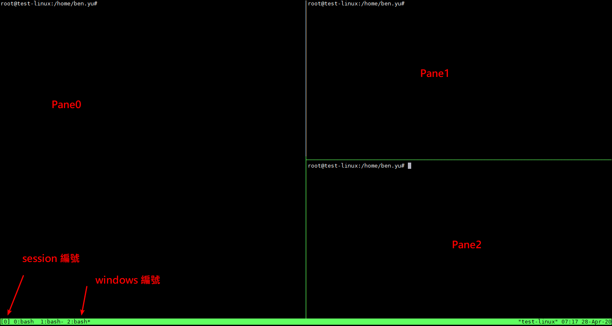
分割視窗 ( Panes )：
在 tmux 的環境中，若想要將 window 視窗分割成多個 pane，並管理建立的 panes，可以使用以下的操作組合鍵：
Ctrl+b 再輸入 % ，垂直分割視窗
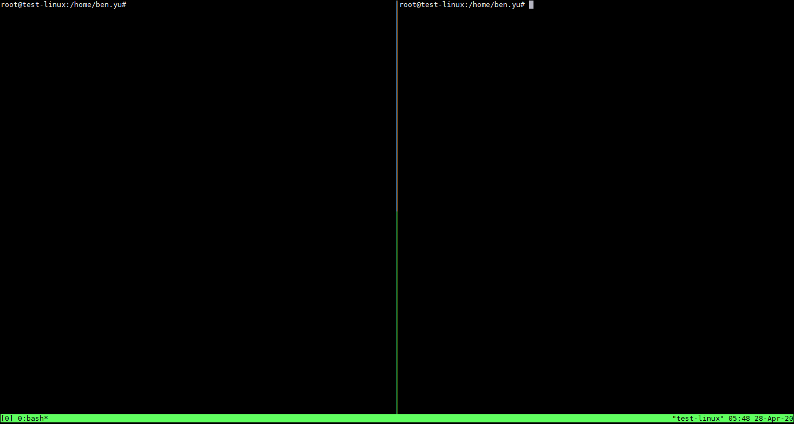
Ctrl+b 再輸入 “ ，水平分割視窗
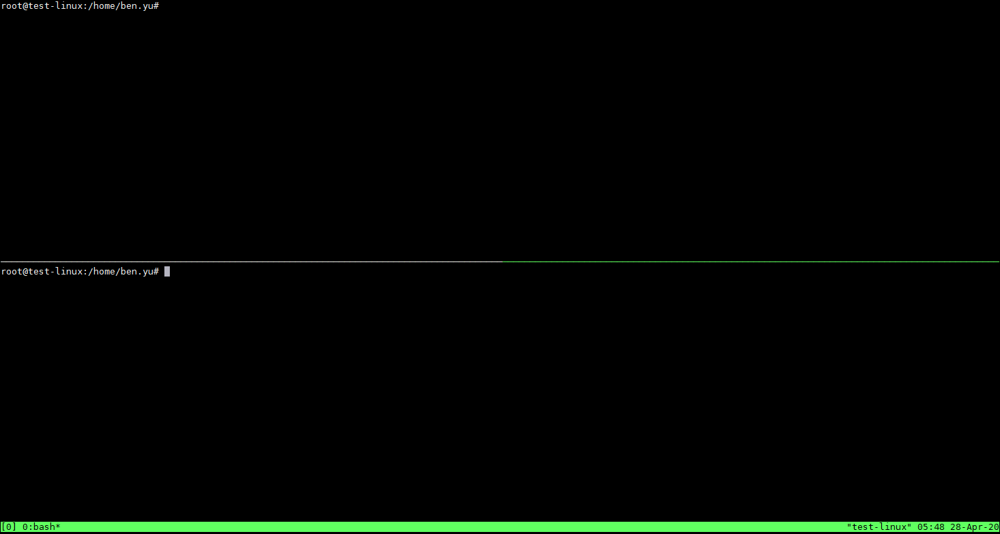
PS：可以分割再分割
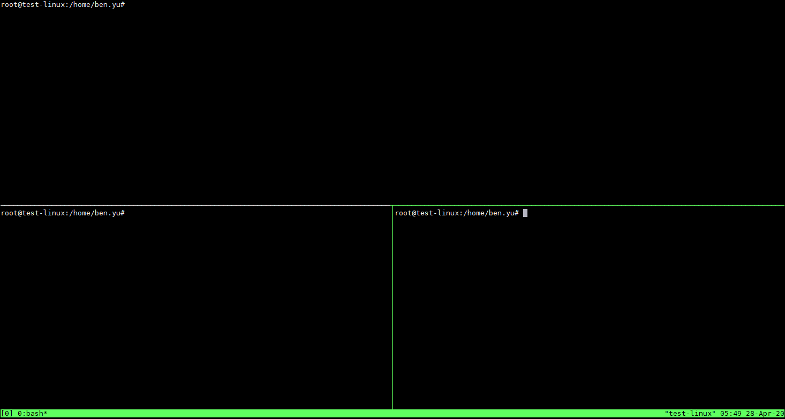
Ctrl+b 再輸入 o ，以輪流方式輪流切換 pane
Ctrl+b 再輸入 方向鍵 ，切換至指定方向的 pane
Ctrl+b 再輸入 空白鍵 ，切換佈局
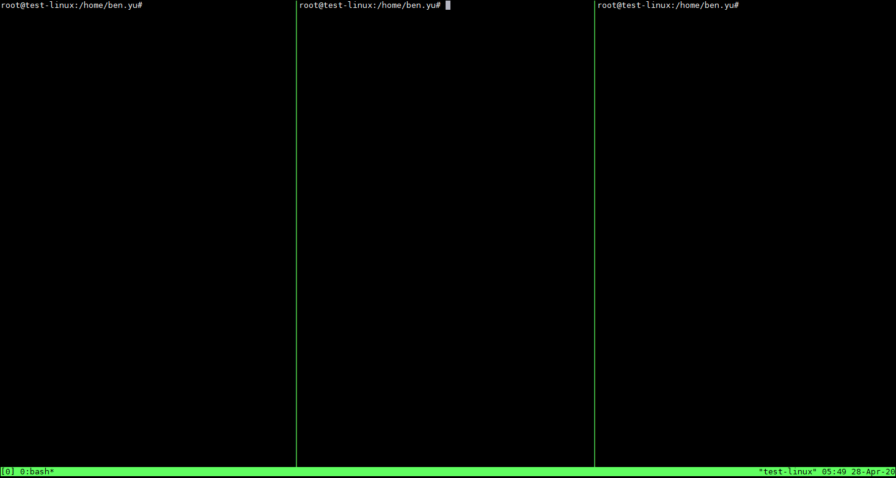
Ctrl+b 再輸入 ! ，將目前的 pane 抽出來，獨立建立一個 window 視窗
Ctrl+b 再輸入 x ，關閉目前的 pane
Windows：
Ctrl+b 再輸入 c ，建立新 window 視窗（create）
Ctrl+b 再輸入 w ，以視覺化選單切換 window 視窗
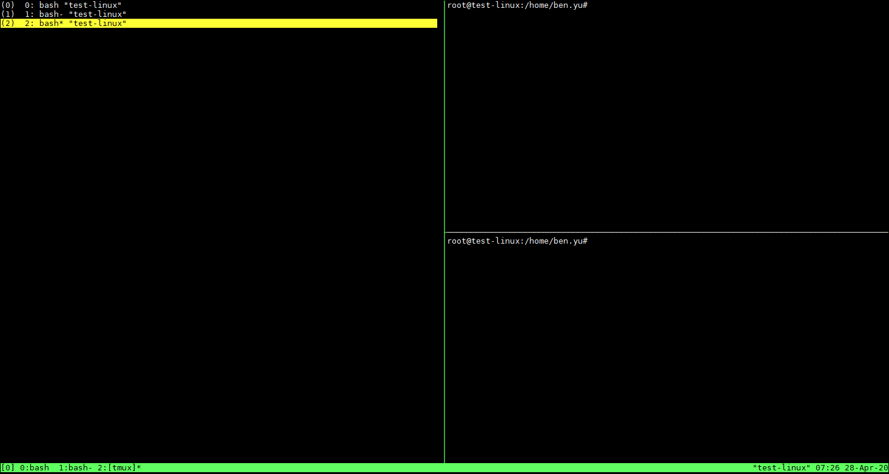
Ctrl+b 再輸入 數字鍵 ，切換至指定的 window 視窗
Ctrl+b 再輸入 n ，切換至下一個 window 視窗（next）
Ctrl+b 再輸入 p ，切換至上一個 window 視窗（previous）
Ctrl+b 再輸入 & ，關閉目前的 window 視窗
Sessions：
每執行一個 tmux 就會建立一個 session，若要列出目前所有的 sessions，下指令
1 | tmux ls |
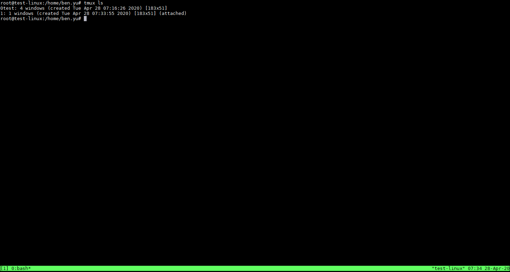
若要繼續使用指定的 session，可以使用 attach 並指定要續用的 session 編號
1 | tmux attach -t 0 |
Ctrl+b 再輸入 $ ，重新命名目前的 session
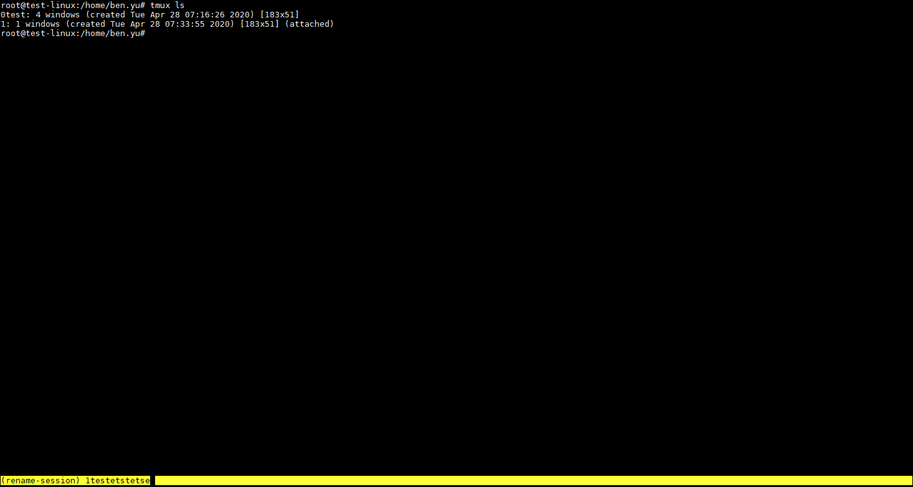
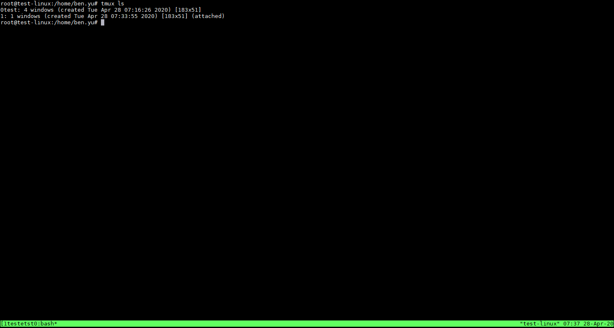
Ctrl+b 再輸入 d ，離開 tmux 環境在背景執行
Ctrl+b 再輸入 s ，以視覺化選單切換 session
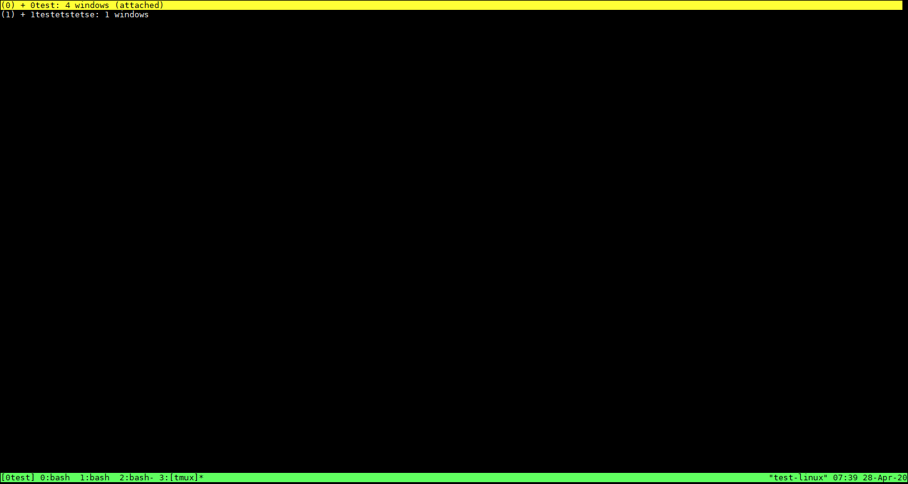
Ctrl+b 再輸入 L ，切換至上一個使用過的 session
Ctrl+b 再輸入 ( ，切換至上一個 session
Ctrl+b 再輸入 ) ，切換至下一個 session
tmux 還有很多進階的功能，詳細的用法可以參考 tmux 的線上手冊
1 | man tmux |